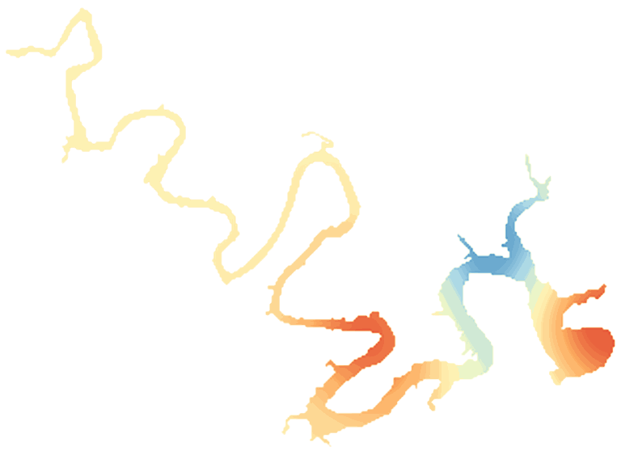

LakeScope › TX
Lake Travis today
Updated 2026-11-14 - Atlas Labs
Clear water, 60°F water, level rising, calm this morning.
Water level
681.49 ft
Lower Colorado River Authority - 2026-11-14
7-day trend: rising (+4.40 ft).
Water clarity and algae
Clear water Last clear view: about a week ago.
Surface temperature
60°F
seen from space on 2026-11-12

Weather, next 3 days
| Day | Sky | High / low | Wind | Rain |
|---|---|---|---|---|
| Saturday | Partly Sunny then Slight Chance Rain Showers | 67 / 54°F | 10 mph E | 18% |
| Sunday | Showers And Thunderstorms | 63 / 47°F | 10 mph E | 91% |
| Monday | Mostly Cloudy then Slight Chance Rain Showers | 56 / 47°F | 10 mph NNE | 15% |
Sunrise 06:57 - sunset 17:35 - Waxing crescent. National Weather Service.
Get the LakeScope app: alerts and the 3-D view of Lake Travis